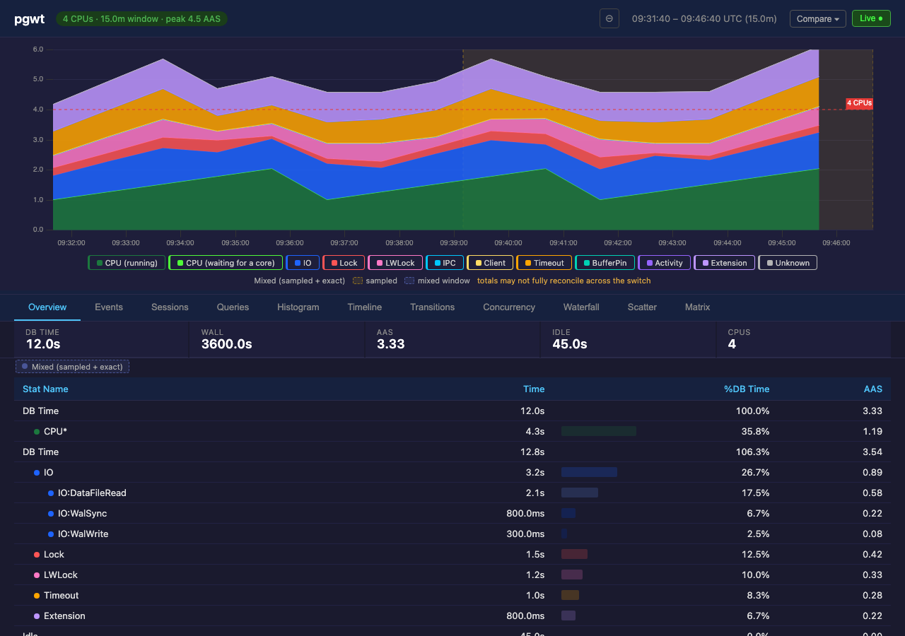
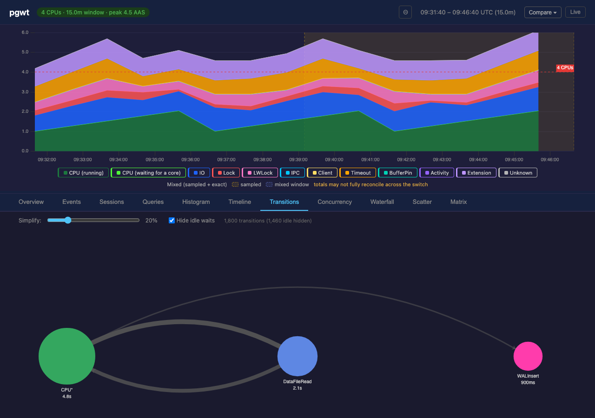
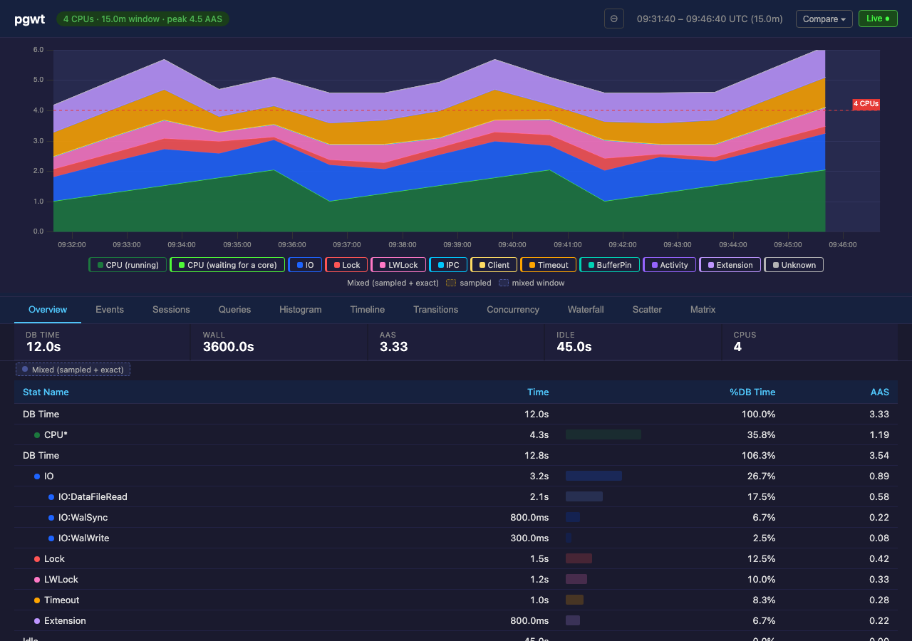
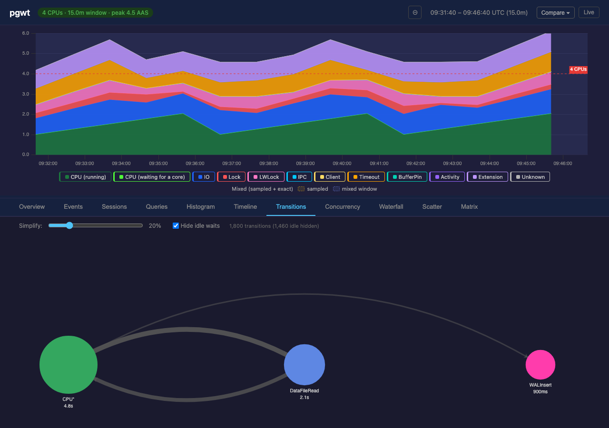
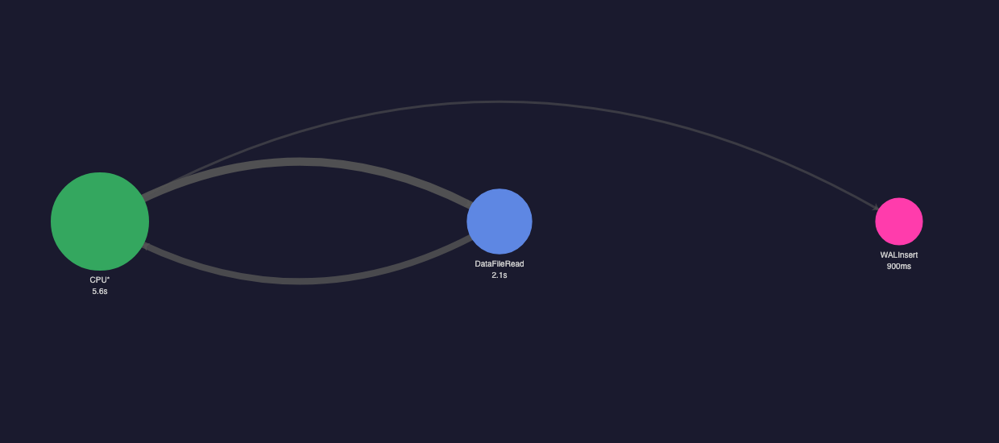
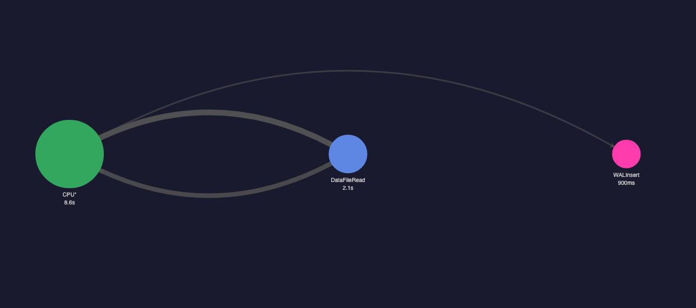

The decision: in a window that is part exact-capture, part sampled, what
should the Transitions flow graph's CPU* node report, and how
does the UI tell the viewer the window spans two capture modes? The owner's
proposal: "a vertical line showing when mode changed, and report numbers
that are correct but with disclaimer that window shows two modes and numbers
can be not aligned."
Overview tab, mixed window, with fidelity_ranges
emitted (first half exact, second half sampled). fidelity.js's
buildFidelityShading already draws a band over just the sampled
sub-range when the server names it — that band's left edge is
the owner's "vertical line," for free, and arguably better: it shows
which half is estimated, not just that a change happened at some
unlabeled instant. Cost: zero new rendering code — the
renderer has existed since Phase B5 and has simply never been fed this
field (issue #322).

Same mock, same window, Transitions tab — the header AAS strip (persistent across every tab) still shows the band and the disclaimer chip above the flow graph.

fidelity_ranges (today's actual behaviour)Identical window and data, fidelity_ranges
withheld — this is what every mixed window looks like in production today,
because nothing emits that field. One uniform indigo tint over the whole
15-minute window, no boundary, no "where" — the viewer cannot tell whether
30 seconds or 14 minutes of it was sampled. Cost of
shipping option 1 instead: src/ must compute and serve the sub-range
boundaries the daemon already knows (exact ⇄ sampled transition times) — a
real, but bounded, server change.


CPU* node question: option A vs option BSame mixed window, same edges (DataFileRead 2.1s, WALInsert
900ms — both exact-tier, unchanged between the two). Only the
CPU* node's reported total changes. Option A
(today's real behaviour, since the Phase 1 change): the node excludes the
sampled sub-range's estimated CPU, so its value is exactly the sum
of its three outgoing edges below (5.59s) — the graph reconciles, but
under-reports the window's real CPU time by whatever the sampled portion
actually used. Option B: the node includes the sampled
estimate (5.59s + an illustrative 3s), which is the more accurate total —
but the edges still sum to 5.59s, and nothing on screen explains the extra
3s. That gap is not a rendering bug to fix later; it is inherent to
reporting an edge-derived graph and a node total from two different
evidence classes in the same picture.


The existing per-chart fidelity chip (already shipped, already shown on every tab via the persistent AAS header) is the natural home — no new UI surface needed. Proposed text, appended only when the server names a sampled sub-range (i.e. only when there is an actual switch to disclaim, not for the uniform whole-window tint in §2):
totals may not fully reconcile across the switch
Short, states a fact rather than apologising for one, and sits next to the existing "sampled" / "mixed window" swatches rather than introducing new chrome. Rendered (with vs. without range detail):
Options A and B both report ONE number on a node that structurally cannot
carry both properties (reconciles-with-edges AND accurate-total) at once in
a mixed window — that's not a rendering choice, it's a conflict in what the
number means. The picture above suggests not picking one: show
both, explicitly split. Render CPU* as it is today
(A's reconciling value, so the graph's arithmetic never lies) but add a
second line under the node label — already a one-line template change in
buildTransitionsOption — for the sampled-tier estimate, e.g.
CPU* / 5.6s (+~3.0s sampled, est.). That keeps the edges and
the node's primary number self-consistent (never a silent A/B pick a viewer
has to intuit) and keeps the real total visible, labeled as an estimate,
instead of silently dropped (A today) or silently blended in with no
explanation (B). This is not implemented here — it would
need a real node-label rework in lib/builders/transitions.js
plus a decision on whether the estimate should carry a confidence qualifier
(see #306's 3.7–7.6pp under-read spread) — it is only a direction worth the
owner weighing against shipping A or B as-is.
Mock-side changes (prototype-only,
gated behind env vars no existing test sets):
tests/mock_server.py (PGWT_MOCK_FIDELITY_RANGES,
PGWT_MOCK_CPU_NODE_MODE). UI-side: one additive sentence in
web/static/views/active.js's renderFidelityChip,
gated on the shading model actually carrying a named sub-range — no other
production code path changed.